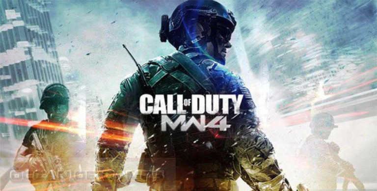
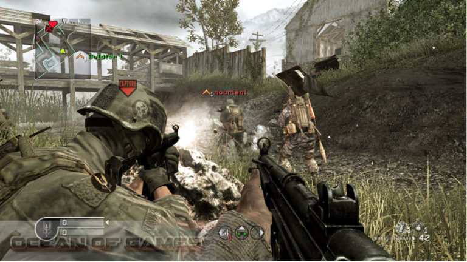

Infinity Ward has come up with the most intriguing and cinematic action experience ever with this game.
The gamers are provided with most advanced weapons and also provides you the transportation means to
transport it to the most hostile areas all around the world in order to take on the most rogue enemies
who are threatening the world. The stage has been set in the year 2011 where some groups have started
civil war in Middle East and you as a well trained commando from special Marine force of the States has to
destroy all the hideouts of the enemies and clear the area. Call of Duty 4 Modern Warfare includes 70 new
as well as authentic weapons and gear from Assault rifles, claymore mines and M-249 SAW machine guns to name few.
Call of Duty 4 Modern Warfare has got some stunning next generation visuals.
You can also download Call of Duty Modern Warfare 3.
Features of Call of Duty 4 Modern Warfare
Following are the main features of Call of Duty 4 Modern Warfare that you will be able to experience after
the first install on your Operating System.
Imposing action game.
Most intriguing and cinematic action experience ever.
Gamers are provided with most advanced weapons.
Provides transportation means for transporting the weapon to most hostile places on earth.
Set in the year 2011.
Play as a US Marine commando and clear the Middle East from rebellious groups.
Includes 70 new and authentic weapons and gears like Assault rifles, claymore mines and M-249 SAW machine guns.

System Requirements of Call of Duty 4 Modern Warfare
Before you start Call of Duty 4 Modern Warfare Setup Free Download make sure your PC meets minimum system requirements.